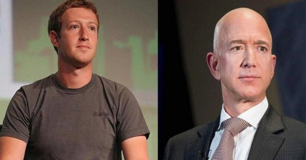

Кому выгоден коронавирус: за время пандемии богатейшие люди стали богаче еще на $255 млрд

Миллиардеры, входящие в список 25 богатейших людей мира, заработали суммарно $255 млрд за 2 месяца пандемии коронавируса.
Изменения размера состояния миллиардеров оценивались с 23 марта по 22 мая, сообщает издание Forbes.
Указано, что за этот период больше всех заработал основатель Facebook Марк Цукерберг — его состояние увеличилось на $31,4 млрд, до $86,5 млрд.
По данным журнала, за последние 2 месяца акции Fаcebook поднялись в цене примерно на 60%, достигнув рекордных значений 22 мая.На этом фоне Цукерберг переместился с 7 места в списке богатейших людей, которое он занимал в апреле, на 4 место.
Немногим меньше заработал основатель и руководитель торговой онлайн-площадки Amazon Джефф Безос — $29,9 млрд, увеличив состояние до $146,9 млрд.Он является самым богатым человеком в мире по версии Forbes.
Как отмечается, в условиях пандемии, которая существенно ограничила работу физических ретейлеров, популярность торговых онлайн-площадок выросла.Это обеспечило рост стоимости акций Amazon на 29% с марта.
Третью позицию занял глава Reliance Industries Limited Мукеш Амбани, который с марта увеличил свое состояние почти на $20 млрд.После этого оно составляет $52,7 млрд, а Амбани стал богатейшим человеком Азии.
Известно, что суммарное состояние 25 богатейших людей мира сейчас составляет около $1,5 трлн, то есть примерно 16% от состояния всех миллиардеров.
В январе 2020 года президент Louis Vuittonn Moеt Hennessy Бернар Арно и члены его семьи заняли 1 место в списке богатейших людей мира журнала Forbes, обогнав основателя Amazon Джеффа Безоса.
Также сообщалось, что состояние 500 богатейших людей мира увеличилось на 25% в 2019 году, они заработали $1,2 трлн и их совокупное состояние достигло $5,9 трлн.
Напомним, американская компания Amazon планирует нанять еще 75 тысяч сотрудников, чтобы ускорить выполнение заказов в условиях пандемии коронавируса.В Amazon также заявили, что теперь планируют потратить более $500 млн на повышение заработной платы работников, что превышает ее предыдущие ожидания на $350 млн.
Posted On: 2020-05-24T00:00:00
Content Date: 2020-05-24
Download Date: 2021-06-20
Document ID: L0C04CX4D